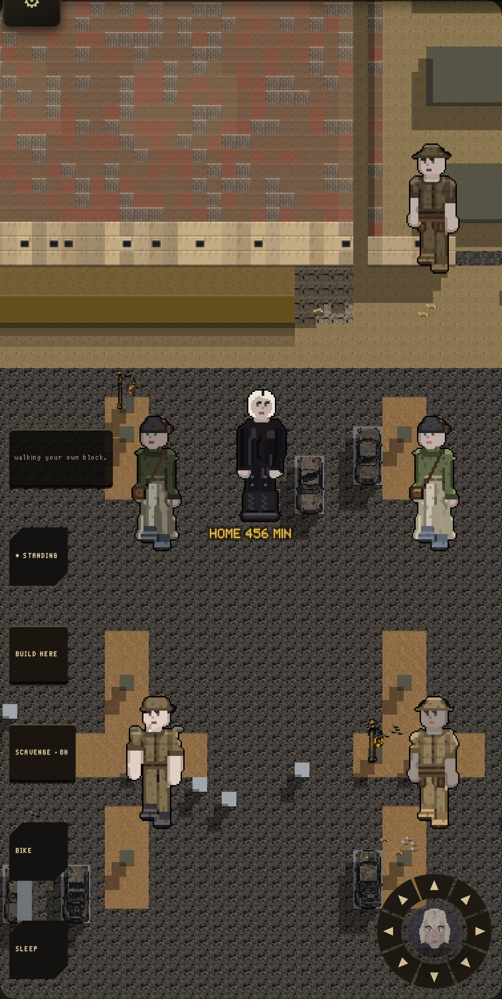

Same street, same block, same corner. Both from the walked game's own camera.
"A person offers you the job, and whether they will depends on your standing... a stranger gets the worst work; somebody who vouches for you gets you the better shift; a bad name closes doors."

Nothing else changed between the two pictures. Not the block, not the hour, not the building. The only thing that moved is what the outfit running that block thinks of him.
| who you are to them | what they offer |
|---|---|
| a stranger, never met | worst work |
| you've done favors for them | the real job |
| somebody vouches for you | the real job |
| they consider you an enemy | no work at all |
This never invents a job that isn't there. A stranger at a scavenging spot still just scavenges; standing can't turn a bad job into a good one. It only decides whether YOU get the good job that block already had, or the leftover work nobody wanted to check your name for.
Two things this game already tracks, asked for the first time. One: how many favors you've done for the outfit that runs this block. That number has been sitting there since early builds, moved by the asking screen, and nothing ever read it for a job before now. Two: whether anyone who likes you belongs to that same outfit. That second one is not fully turned on yet, because the numbers behind it wait on a separate ruling, but it is wired and will start working the moment that ruling lands. Nothing was faked to make it look ready.